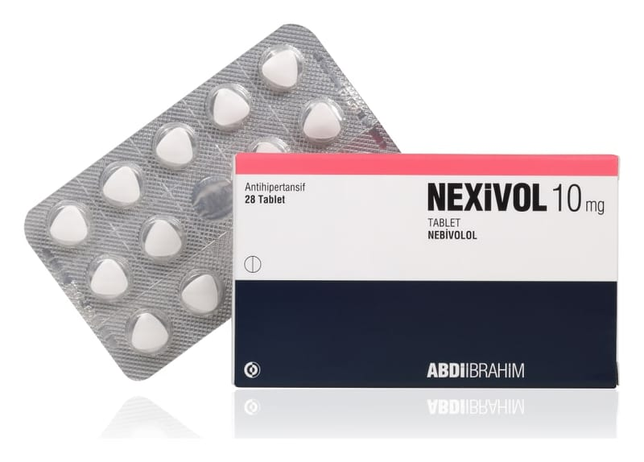

Nexivol 10 mg Tablet, 84 Adet

Ne için kullanılır
KT · Bölüm 1NEXİVOL, her bir tablette 10 mg nebivolol etkin maddesini içeren beyaz renkli, bombeli eşkenar üçgen tablet şeklinde antihipertansif bir ilaçtır.
NEXİVOL’ün 28 veya 84 tablet içeren iki ayrı ambalaj formu mevcuttur.
NEXİVOL, seçici beta-bloker ilaçlar grubunda (yani kalp-damar sistem i üzerinde seçici etki ile) yer alan kardiyovasküler bir ilaçtır. Kalp hızındaki artışı önler, kalbin pompalama gücünü kontrol altına alır. Ayrıca kan damarları üzerinde genişletici etkiye sahiptir ve bu etkisi ile kan basıncında düşmeye yardımcı olur. NEXİVOL yüksek kan basıncının (hipertansiyon) tedavisinde kullanılır. Ayrıca 70 yaş ve üzerindeki hastalarda, hafif-orta düzeyde kronik kalp yetmezliğinin tedavisinde diğer tedavilere ilave olarak kullanılır.